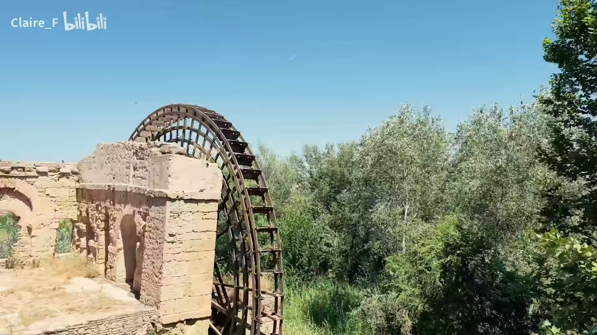
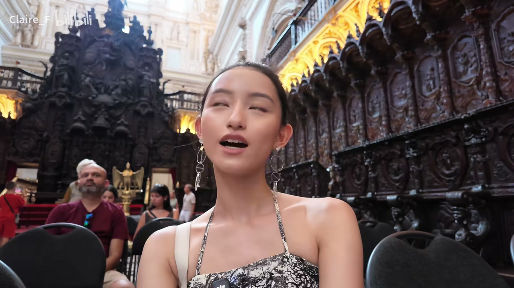

01
中文
这个是建在清真寺里面的教堂。
EN
This is a cathedral built inside a mosque.
表达提示built inside a mosque（建在清真寺里面）

Scene English · 旅行Vlog · 西班牙 · 科尔多瓦
A One-of-a-Kind Fusion of Islam and Christendom | Cordoba Vlog | Roaming Spain 05
🎧 语音讲解
Opening: The Lost Center of the World
情境博主开场介绍科尔多瓦：十世纪时它是伊斯兰世界的中心，统治者自称哈里发，比巴黎伦敦更繁华。语域：历史讲述开场。
这个是建在清真寺里面的教堂。
This is a cathedral built inside a mosque.
表达提示built inside a mosque（建在清真寺里面）
今天的这座城市，在十世纪的时候是伊斯兰世界的中心。
This city was the center of the Islamic world in the tenth century.
表达提示the center of the Islamic world（伊斯兰世界的中心）；the tenth century（十世纪）
当巴黎、伦敦都只有几万人口、到处都很脏乱差的时候，科尔多瓦就已经有几十万的人口。
When Paris and London had only tens of thousands of people and were dirty and messy, Cordoba already had hundreds of thousands.
表达提示tens of thousands（几万人口）；hundreds of thousands（几十万人口）
伊斯兰世界的中心 → the center of the Islamic world / the heart of the caliphate
脏乱差 → dirty and messy / filthy and chaotic
A Cathedral Inside a Mosque: The Only One
情境博主介绍科尔多瓦清真寺的特别之处：中间突兀的教堂部分是世界上唯一一座嵌入清真寺而非取而代之的天主教堂。语域：讲解+对比。
中间这一块突兀的部分，就是世界上唯一一座嵌入在清真寺里面，而不是取而代之的天主教堂。
That abrupt section in the middle is the only cathedral in the world built into a mosque, rather than replacing it.
表达提示built into a mosque（嵌入清真寺）；rather than replacing it（而不是取而代之）
进入清真寺就可以看到非常割裂的画风，这边是伊斯兰的风格，那边是金碧辉煌的天主教教堂的风格。
Inside, you see two jarringly different styles — Islamic on this side, and the dazzling Catholic cathedral style on that side.
表达提示jarringly different（割裂的）；dazzling Catholic cathedral（金碧辉煌的天主教教堂）
这个是官方模拟出来的，如果这个地方没有被拆了建成教堂，里面的清真寺大概是长这样的。
This is the official reconstruction — if the mosque hadn't been torn down for the cathedral, this is roughly what it would look like.
表达提示official reconstruction（官方模拟）；torn down（拆毁）
取而代之 → replace it / take its place
割裂的画风 → jarringly different styles / a striking clash of styles
The Difficult Fusion
情境博主解释为什么这里特殊：建教堂的主教知道这座清真寺对哈里发王国的重要性，所以决定进行非常艰难的融合。语域：历史分析。
当时来到科尔多瓦要建这个教堂的主教，他知道这座清真寺对哈里发王国的重要性。
The bishop who came to build this cathedral in Cordoba knew how important the mosque was to the caliphate.
表达提示the bishop（主教）；how important ... was to（…对…的重要性）
这里曾经是伊斯兰世界的中心，所以他就决定要进行这个非常艰难的融合。
Since this had been the center of the Islamic world, he decided to carry out this very difficult fusion.
表达提示carry out a fusion（进行融合）；very difficult（非常艰难）
继续给大家看一组极致的反差，这是耶稣钉在十字架上，然后这边是清真寺。
Let me show you an extreme contrast — over here Jesus on the cross, and over there the mosque.
表达提示an extreme contrast（极致的反差）；Jesus on the cross（耶稣钉在十字架上）
知道重要性 → know how important ... was to / recognize the significance of
极致的反差 → an extreme contrast / a stark juxtaposition

Geometry Perfected: Straight From Any Angle
情境博主惊叹清真寺的廊柱：从任何角度看过去都是一条笔直的线，把几何玩到了极致。语域：惊叹+观察描述。
大家看这个廊，我从这里看它是一条直线，站在任何一个点看过去，它都是直直的一条。
Look at these columns — from here it's a straight line, and from any angle you stand, it's perfectly straight.
表达提示perfectly straight（笔直）；from any angle（从任何角度看）
他们真的把几何玩到极致了。
They really took geometry to the extreme.
表达提示take something to the extreme（把…玩到极致）
不太妙，这个城堡好像关门了。
Not good — it looks like the castle is closed.
表达提示not good（不太妙）；looks like ... is closed（好像关门了）
把几何玩到极致 → take geometry to the extreme / push geometry to its limits
关门了 → is closed / shut for the day
Scammed: The Map Said Open
情境博主按地图去了一个标着「营业中」的城堡，结果人家关门，还有停车场的「收费员」其实是拿纸板骗钱的。语域：吐槽叙事。
刚刚那个城堡还有这个地方，它都说它正在营业中，结果来了人家关门。
The map said this castle and that place were open, but when we got here, they were closed.
表达提示the map said ... were open（地图说营业中）
我的地图骗我。
My map lied to me.
表达提示lie to someone（骗某人），口语幽默表达
那个人给我们贴的木板，他跑了，他不在这里看了。
The guy who put the cardboard in our car is gone — he's not watching over it anymore.
表达提示put the cardboard in our car（在我们车上放纸板）；watch over（看守）
地图骗我 → my map lied to me / the map was wrong
营业中 → open / open for business
Closing: The Palace City & a Forgotten Glory
情境博主介绍科尔多瓦最鼎盛时在远处建了一座宫廷城彰显实力，但鼎盛期很短，十一世纪内战被摧毁，直到上世纪才被重新挖掘。语域：历史收尾。
它为了彰显自己的能力，在离科尔多瓦非常远的地方，专门建一整座宫廷城。
To show off its power, it built an entire palace city far away from Cordoba.
表达提示show off its power（彰显能力）；a palace city（一座宫廷城）
在伊斯兰内战期间，这座宫廷城被摧毁，随着科尔多瓦的衰落也慢慢被大家遗忘。
During the Islamic civil war, the palace city was destroyed, and as Cordoba declined, it was gradually forgotten.
表达提示civil war（内战）；be destroyed（被摧毁）；be forgotten（被遗忘）
是一直到上个世纪，这里才被重新挖掘出来，也让大家记起了这里曾经的辉煌。
Only in the last century was it re-excavated, reminding everyone of its former glory.
表达提示re-excavated（重新挖掘）；former glory（曾经的辉煌）
彰显能力 → show off its power / demonstrate its might
曾经的辉煌 → former glory / past splendor
介绍科尔多瓦清真寺的独特之处
描述里面的风格对比
吐槽被地图骗的经历
介绍宫廷城被遗忘的历史
built inside（嵌入）比 has a church in it 更准确，强调建筑关系而非包含。
科尔多瓦的特殊性是「嵌入不取代」，直接用取代句式会与史实相反。
flourish 是动词，不是形容词；说繁华用 prosperous / thriving / the center of ...。
讲历史地位比讲年数更精确；具体到世纪 the tenth century。